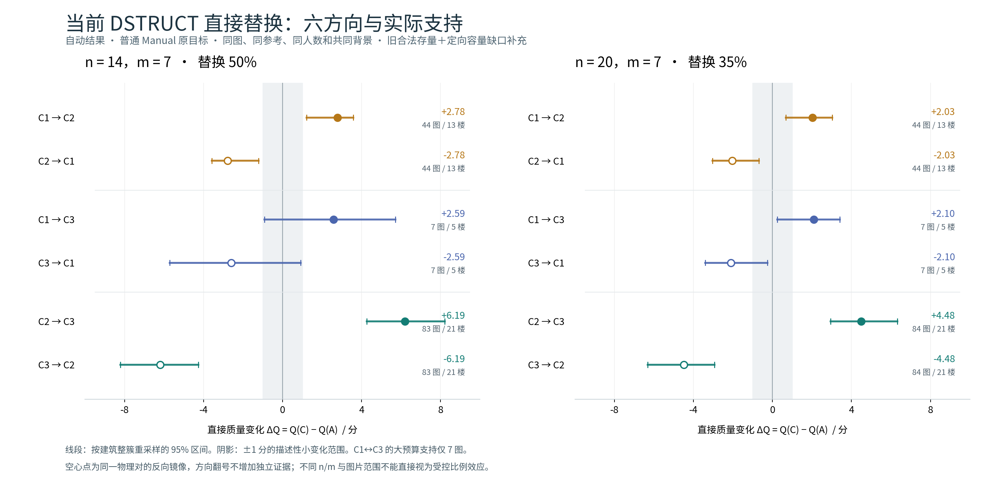

本轮完成的三件事
逐成员核验旧 TARGET28,420 个合法物理对43 个当前方向改变的事件保留映射；混类或含未知类别的共同背景仍可合法。
限定缺口的实际补算704 个新物理对7 图、22 格、1,408 支团队；1,388 个端点可评分，20 个无连接。种子和选择先于结果冻结。
直接追踪输出机制248 对固定诊断样本存量团队诊断重放；局部票数、共同 D 观察、对应与来源环可追溯，另有正反实例图册。
总研究底表含 33,220 个物理对、51,562 支不同团队。第 12 批 ABC 的直接腿保留原设计来源，不能与新增队列或旧存量视为同一种随机抽样。
六方向结果与支持
先选来源、版本和预算，再查看每个方向。点击方向行，下面的逐图表同步切换。
| 方向 | 平均 ΔQ | 95% 楼聚类区间 | 平均 |ΔQ| | 改善 / 小变 / 下降 | Q 图 / 登记图 | 楼 | Q 对 / 登记对 |
|---|
ΔQ = Q(C) − Q(A)；幅度先在图片内平均 |ΔQ|。改善与下降分别采用图均大于 +1、低于 −1，其余为小变化。反向显示来自同一物理对调，支持不增加、均值必然反号。0 与无 Q 严格区分。
如何理解来源、支持和区间
旧事件通过当前标签检查后，仍是存量团队上的条件分析；本轮缺口补充只覆盖指定的 22 个缺口格。合并视图扩大了已注册图片覆盖，不代表所有图片和所有团队重新均匀抽样。图片内先汇总，建筑整簇区间不把共享人员的团队视为独立样本。
辅助版只接入 57 个已批准案例中的精确端点命中。原共同 Q 保持，另有 7 个可评端点带来 41 个新增共同对。新增共同支持里的 ΔQ 是辅助后 A/C 之间的差值，不能把原无 Q 当零计算改善。
不同预算、背景或图片支持不能直接视作受控比例效应。C1↔C3 的大预算只有 7 张可行图；较小预算另有充分的合法存量支持，可选择 6/3、8/4、10/5 查看。
| 图片 | 难度 / 用途 | ΔQ | 平均 |ΔQ| | Q(A) | Q(C) | 有效物理对 | 建筑 |
|---|
相同条件的分层
| 条件 | ΔQ | 平均 |ΔQ| | 图 / 楼 | 正 / 负图片 | 有效物理对 |
|---|
核心预算全方向图

较小预算 C1→C3 的既有合法直接 AC：6/3 为 37 图、8/4 为 26 图、10/5 为 20 图。它们与上图的大预算属于不同图片和背景条件，完整结果可在上方选择查看。
从平均值回到原图
票数、位置与输出状态
名义阈值在同一 A/C 对内保持不变。诊断区分稳定 D 观察锚点上的票数跨线、观察重分组、入选节点集合与完整来源环变化。没有检测到跨票的部分，仍可能有位置或方向变化。
打开完整原图案例与逐人标注资料下载与最终验收
较大底表、完整端点与代码已按第 13–15 批分包保存；文件角色及运行方式见安装说明。标签、参考与原自动实验保持冻结身份。